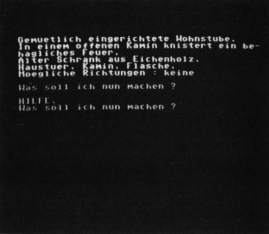

Cohan's Land
Ergründen Sie das Geheimnis der Nachricht aus der Flaschenpost. Ist der Schatz wirklich vorhanden oder handelt es sich nur um einen Scherz?

Cohan's Land ist ein deutsches Textadventure, das ich vor etwa einem Jahr geschrieben habe. Die Entstehungsgeschichte ist ziemlich interessant: Als ich das Manuskript zu meinem ersten Adventure-Programmierkurs schrieb, stellte ich im Rahmen dieses Kurses vor, wie man ein Adventure schreibt. Also wie man eine Idee aufgreift und diese dann ausarbeitet. Dabei kam mir die Idee zu Cohan's Land. Cohan's Land ist ein Adventure, das im Scott Adams-Stil programmiert ist. Scott Adams, ein Pionier der Abenteuerspielprogrammierung, hat Spiele wie »Adventureland«, »Pirate Adventure«, »the Count«, »Voodoo Castle« sowie die Questprobe-Serie »the Hulk«, »Spiderman« etc. entworfen. Erstaunlich ist die Tatsache, daß Scott Adams sein absolut miserables Zwei-Wort-Parsersystem auch heute noch verwendet. Seine Adventures verstehen nur Befehle, die sich maximal aus zwei Worten zusammensetzen (TAKE SWORD). Auf großen Textumfang legt er auch keinen Wert – die Texte beschreiben nur das Wesentlichste und sind so knapp wie möglich gehalten. Fast der gesamte zur Verfügung stehende Speicherplatz wird bei Adams für die Grafik verbraten, die sich komplett auf einmal im Speicher befindet – es wird nie nachgeladen.
Trotz des schlechten Programmierkonzeptes haben diese Adventures jedoch etwas Einzigartiges an sich: Der Spieler wird knallhart mit Problemen und Denknüssen konfrontiert. Man muß nicht lange herumlaufen und schöne Raumbeschreibungen lesen wie bei INFOCOM – es geht sofort richtig rund. So auch bei Cohan's Land. Die Texte sind knapp gehalten, die Probleme hingegen äußerst knifflig. Der Parser ist jedoch wesentlich besser ausgefallen. Der Wortschatz umfaßt etwa 140 Wörter und der Parser versteht ganze Sätze. Trotzdem ist das Programm nur knapp 30 KByte lang.
Die Story ist äußerst interessant: Im Spiel tauchen sowohl Fantasy-, Science-Fiction- und auch Nostalgie-Elemente auf. Der Spieler muß einen gefährlichen Dschungel überleben, Roboter bekämpfen und letztendlich die geheimnisvolle Quelle der Macht zerstören. Es fängt ganz harmlos mit einer Seereise an. Ein Forscher hat in einer Flaschenpost eine uralte Seekarte entdeckt, auf der eine bisher unbekannte Insel eingezeichnet ist. Die Expeditionsflotte geht bei einem gewaltigen Seesturm unter. Natürlich überlebt der Forscher und wird als Schiffbrüchiger auf die geheimnisvolle Insel verschlagen. Auf dieser Insel entdeckt er ein unvorstellbares Geheimnis...
(Michael Nickles/dm)